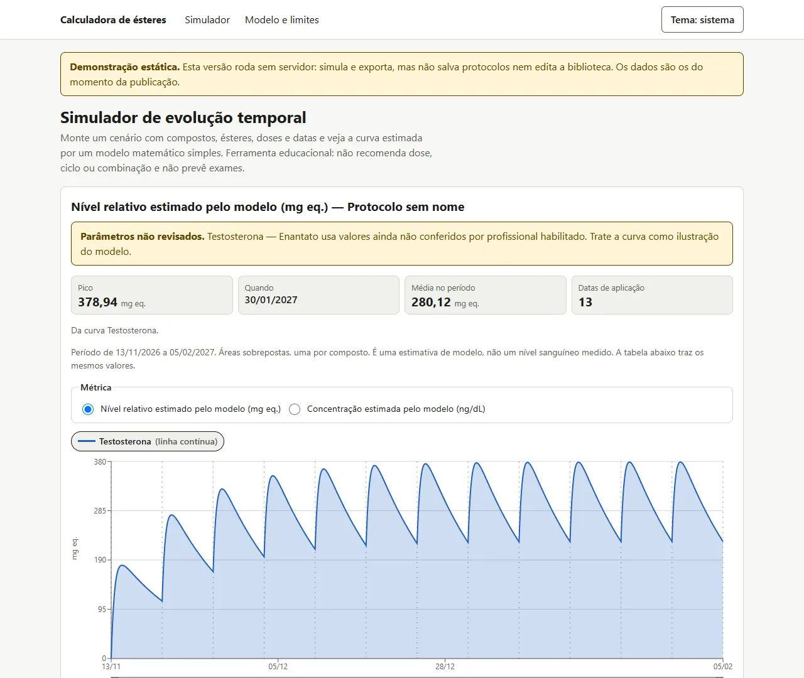
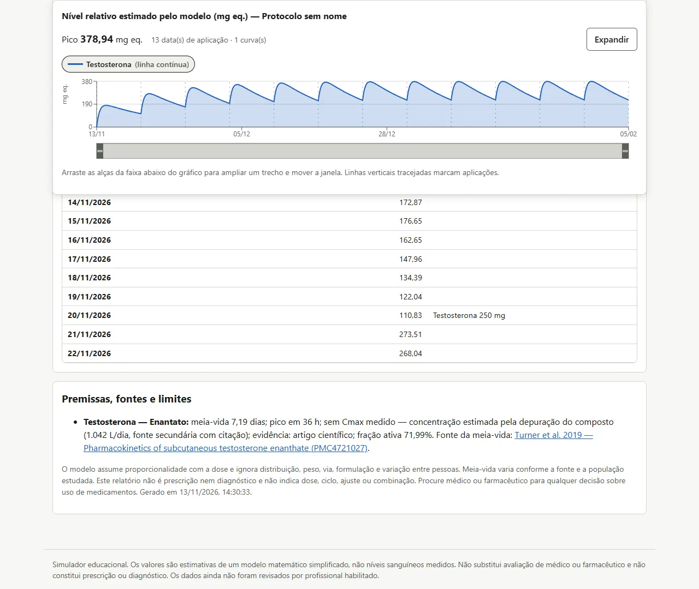
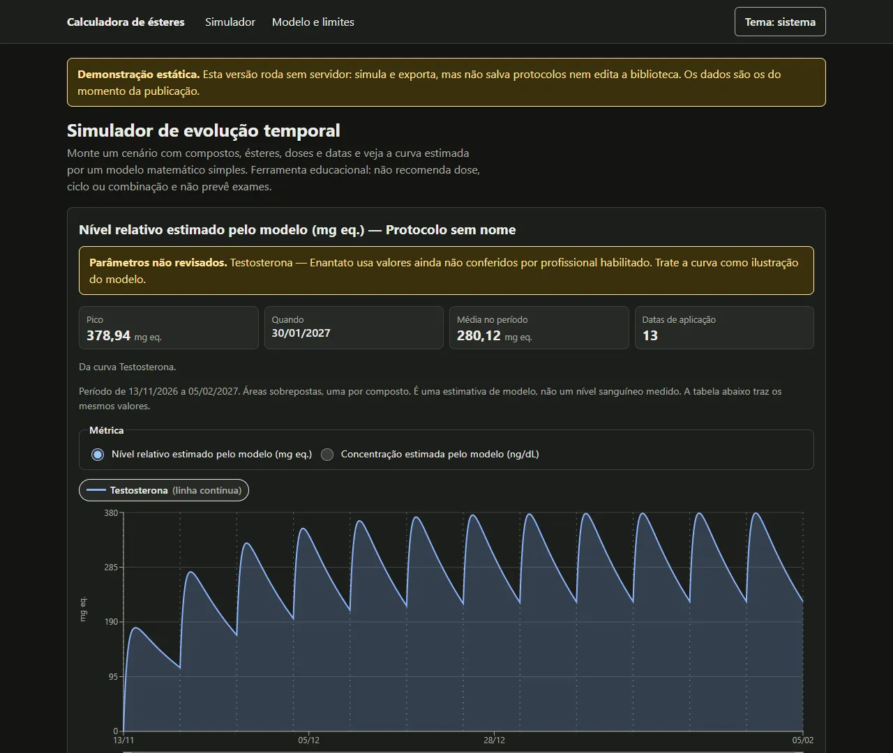
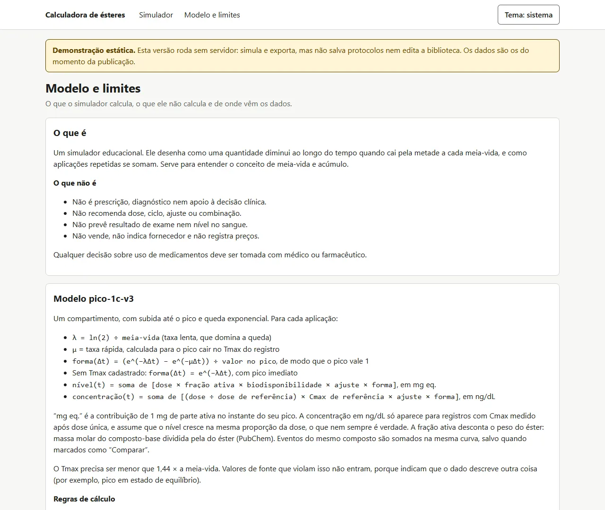
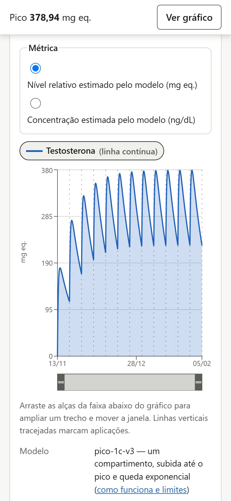

Telas





O problema
Calculadoras de meia-vida costumam mostrar uma curva bonita sem dizer de onde veio cada número. Um valor copiado de fórum pesa o mesmo que um valor de bula. Este projeto parte do contrário: o cálculo é simples e documentado, e o esforço maior está em rastrear cada parâmetro até a fonte e deixar claro o que ainda é provisório.
O que já funciona
- Simulador Vários eventos com dose, unidade, frequência e número de aplicações; eventos do mesmo composto somam na mesma curva ou ficam separados para comparar.
- Produto comercial Preenche os eventos a partir do laboratório e do nome comercial. Em produto combinado, a dose é dividida entre os ésteres na proporção declarada.
- Duas escalas Nível relativo em mg eq. sempre; concentração em ng/dL só quando há Cmax medido ou depuração cadastrada. Sem dado, o simulador não inventa ng/dL.
- Evidência visível Cada parâmetro guarda fonte, trecho literal e nível de evidência. Dado provisório, por analogia ou derivado dispara um aviso na própria curva.
- Biblioteca e catálogo 39 formas de compostos com parâmetros e 496 apresentações comerciais sem preço, com vínculo à biblioteca e histórico de alterações.
- Exportação CSV, JSON e impressão em PDF, sempre com a versão do modelo e a versão dos dados.
- Lista para revisão clínica Um script gera, a partir do banco, o documento que lista cada parâmetro frágil, de onde veio e o que a revisão precisa responder.
- Acessibilidade Tabela equivalente ao gráfico, legenda operável por teclado, rótulo em todo campo e estados que não dependem só de cor.
Como foi construído
O motor de simulação é uma função pura, sem acesso a banco: recebe os eventos e devolve as curvas. Os dados vêm de bulas oficiais (DailyMed), artigos (PubMed e PMC) e PubChem, coletados por scripts que guardam o trecho de origem. Para o GitHub Pages, o workflow sobe um PostgreSQL só durante o build, carrega os dados e exporta o simulador como HTML estático.
Qualidade
- 59testes automatizados do motor e dos estilos das curvas
- 9testes de interface no navegador
- 19 de 20formas comparáveis dentro de um fator 2 da ferramenta de referência
- 4,5:1de contraste mínimo em todo texto, nos dois temas
- Meia-vida só entra com trecho literal de uma fonte; sem fonte, a forma não é simulada.
- Tmax incompatível com a meia-vida é recusado, porque indica dado de outro contexto.
- Dado de animal não entra, e fontes sem valor de evidência ficam registradas com o motivo da recusa.
- Nenhum registro pode ser aprovado antes da revisão clínica; toda alteração manual fica no histórico.
Situação
Primeiro incremento concluído e em fase de teste. Os parâmetros ainda não foram revisados por profissional habilitado. Próximos passos:
- Revisão clínica: conferir os parâmetros frágeis com médico ou farmacêutico.
- Contas e compartilhamento: salvar protocolos por pessoa e gerar link somente leitura.
- Painel de revisão: aprovar registros com histórico de versões.